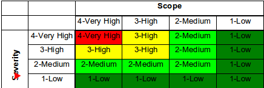
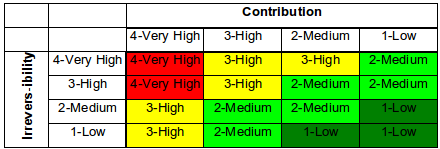
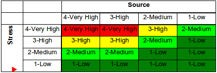

In stress based mode, Scope and Severity ranks are combined to create Threat Magnitude. Irreversibility is combined with Contribution to create the Source of Stress Ranking, and then Threat Magnitude and Source of Stress Rankings are combined to create the Summary Stress Rating.
Stress Ranking (Threat Magnitude): Each stress is given a rank for Severity and Scope. A rule-based procedure is then used to combine the rankings for the Scope and Severity variables to get a ranking of Threat Magnitude. Under these rules, if a threat is rated 'low' on either variable, then the magnitude is 'low' overall.
Source of Stress Ranking: A source rank is the calculated by combining the rankings for Contribution and Irreversibility as shown in the matrix below.
Combining Stress and Source Ranks: The source rank calculated from the first matrix is then combined with the stress rank which was calculated from the Stress Ranking matrix as shown in the matrix below.
